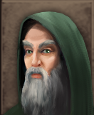
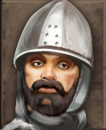
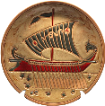
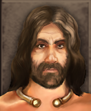

RTR: Imperium Surrectum
RTR: Imperium SurrectumRetinue — V
← all retinue · all traits · wiki index
18 retinue members whose name begins with V. A · B · C · D · E · F · G · H · I · J · K · L · M · N · O · P · Q · R · S · T · U · V · W · X · Y · Z
Valerius Catullus
unique — one in the world at a time · never alongside Elder Senator, Honest Man · never for 19 of the cultures.
Effects: +1 Influence
Romantic latin poet and writer of the elite patrician classes, with many powerful connections.
Acquisition is tied to the trait: Patrician.
Cultures that never receive it (19)
Gallic · Germanic · Dacian · Celtiberian · Brittonic · Thracian · Phoenician · Libyan · Caucasian · Anatolian · Iranian · Arab · Indian · Egyptian · Ethiopian · Greek · Western Hellenistic · Eastern Hellenistic · Illyrian
How it is gained — 2 triggers, at the end of the character's turn
| When | Chance | Conditions | When | Chance | Conditions | |||
|---|---|---|---|---|---|---|---|---|
| at the end of the character's turn | 20% | EndedInSettlement and SettlementBuildingExists >= scriptorium and CultureType roman and IsGeneral and I_TurnNumber >= 432 and I_TurnNumber <= 452 and Trait Patrician >= 2 | at the end of the character's turn | 20% | EndedInSettlement and SettlementBuildingExists >= scriptorium and CultureType roman and IsGeneral and I_TurnNumber >= 432 and I_TurnNumber <= 452 and Trait Patrician >= 2 |
---
Vates

never alongside Sacred Menhir Carver, Arabian Pilgrims, Ibex Hunter · never for 13 of the cultures.Effects: +1 Command, +5 Battle Surgery, +5 Mining, +5 Construction
This man has the role of a seer and performer of sacrifices, in particular administering human sacrifice under the guidance of a druid. The Vates is also respected for his skills of divination, healing, and geomancy.
Acquisition is tied to traits: Eligible For Feasting, Rational Concerns.
Cultures that never receive it (13)
Phoenician · Libyan · Caucasian · Anatolian · Iranian · Arab · Indian · Egyptian · Ethiopian · Roman · Greek · Western Hellenistic · Eastern Hellenistic
How it is gained — 5 triggers, at the end of the character's turn
| When | Chance | Conditions | When | Chance | Conditions | When | Chance | Conditions |
|---|---|---|---|---|---|---|---|---|
| at the end of the character's turn | 2% | EndedInSettlement and RemainingMPPercentage > 90 and SettlementBuildingExists >= awesome_temple and SettlementBuildingExists >= bardic_circle and Trait Superstitious >= 1 and not FactionType getae and not FactionType sir… | at the end of the character's turn | 2% | EndedInSettlement and RemainingMPPercentage > 90 and SettlementBuildingExists >= bardic_circle and Trait Superstitious >= 1 and Trait CelticFeast >= 2 and not FactionType getae and not FactionType siraces and not Faction… | at the end of the character's turn | 2% | EndedInSettlement and RemainingMPPercentage > 90 and SettlementBuildingExists >= brewery and SettlementBuildingExists >= bardic_circle and Trait Superstitious >= 1 and not FactionType getae and not FactionType siraces an… |
| at the end of the character's turn | 2% | EndedInSettlement and RemainingMPPercentage > 90 and SettlementBuildingExists >= hospital_2 and SettlementBuildingExists >= bardic_circle and Trait Superstitious >= 1 and not FactionType getae and not FactionType siraces… | at the end of the character's turn | 2% | EndedInSettlement and RemainingMPPercentage > 90 and SettlementBuildingExists >= awesome_temple and SettlementBuildingExists >= bardic_circle and Trait Superstitious >= 1 and not FactionType getae and not FactionType sir… |
---
Vestal Virgin
never alongside Oracle, Shaman, Pythia · never for 18 of the cultures.
Effects: +1 Influence, +1 Public Security
Keeper of the sacred flame, who has the dignity of all the Romans as well as being scapegoats when dignity fails…
Acquisition is tied to the trait: Reverent.
Cultures that never receive it (18)
Gallic · Germanic · Dacian · Celtiberian · Brittonic · Thracian · Phoenician · Libyan · Caucasian · Anatolian · Iranian · Arab · Indian · Greek · Western Hellenistic · Eastern Hellenistic · Egyptian · Ethiopian
How it is gained — 1 trigger, ending a turn in a settlement
| When | Chance | Conditions | |||||||||
|---|---|---|---|---|---|---|---|---|---|---|---|
| ending a turn in a settlement | 2% | Trait Pious >= 3 and RemainingMPPercentage > 90 and CultureType roman and SettlementName Rome |
---
Veteran Centurion
never for 20 of the cultures.
Effects: +2 Personal Security, +1 Infantry Command
A veteran of many campaigns, loyal and true, constantly alert to dangers around his general. Polybius wrote that a centurion should be calm and sagacious, rather than brave. They should not be desirous of battle, but once battle is joined, should be the type that will not give up their ground, even unto death.
Acquisition is tied to the trait: Green.
Cultures that never receive it (20)
Gallic · Germanic · Dacian · Celtiberian · Brittonic · Thracian · Scythian · Phoenician · Libyan · Caucasian · Anatolian · Iranian · Arab · Indian · Egyptian · Ethiopian · Greek · Western Hellenistic · Eastern Hellenistic · Illyrian
How it is gained — 1 trigger, after a battle
| When | Chance | Conditions | |||||||||
|---|---|---|---|---|---|---|---|---|---|---|---|
| after a battle | 2% | PercentageOfArmyKilled <= 20 and GeneralNumKillsInBattle > 3 and WonBattle and not Routs and Trait GeneralExperience >= 3 and Attribute Command >= 4 and ( FactionType romans_julii or FactionType roman_rebels_1 or Faction… |
---
Veteran Horseman

never for 14 of the cultures.Effects: +1 Personal Security, +1 Cavalry Command
A grizzled veteran of many campaigns, loyal and true, constantly alert to dangers around his warlord…
Cultures that never receive it (14)
Gallic · Germanic · Dacian · Celtiberian · Brittonic · Thracian · Phoenician · Libyan · Caucasian · Anatolian · Iranian · Arab · Indian · Roman
No trigger in the file grants this — it comes from the campaign script or an event, and is listed here because the game still shows it when it arrives.
---
Veteran Kybernetes

unique — one in the world at a time · never alongside Veteran Kybernetes, Veteran Kybernetes · never for 7 of the cultures.Effects: +1 Command, +2 Movement Points
This man's navigatorial skills haven't gone unnoticed by his Admiral! After his deeds on the high seas, he was promoted to kybernetes, a helmsman. He is now the one who steers the ship and is often the actual commander of the vessel. The entire crew is dependant on his ability!
Cultures that never receive it (7)
Gallic · Germanic · Dacian · Celtiberian · Brittonic · Thracian · Scythian
How it is gained — 1 trigger, after a battle
| When | Chance | Conditions | |||||||||
|---|---|---|---|---|---|---|---|---|---|---|---|
| after a battle | 3% | AgentType = admiral and WonBattle and ( CultureType e_hellenistic or CultureType w_hellenistic or CultureType greek or CultureType anatolian ) |
---
Veteran Kybernetes (Kybernetes2)
unique — one in the world at a time · never alongside Veteran Kybernetes, Veteran Kybernetes · never for 7 of the cultures.
Effects: +1 Command, +2 Movement Points
This man's navigatorial skills haven't gone unnoticed by his Admiral! After his deeds on the high seas, he was promoted to kybernetes, a helmsman. He is now the one who steers the ship and is often the actual commander of the vessel. The entire crew is dependant on his ability!
Cultures that never receive it (7)
Gallic · Germanic · Dacian · Celtiberian · Brittonic · Thracian · Scythian
How it is gained — 1 trigger, after a battle
| When | Chance | Conditions | |||||||||
|---|---|---|---|---|---|---|---|---|---|---|---|
| after a battle | 3% | AgentType = admiral and WonBattle and ( CultureType e_hellenistic or CultureType w_hellenistic or CultureType greek or CultureType anatolian ) |
---
Veteran Kybernetes (Kybernetes3)
unique — one in the world at a time · never alongside Veteran Kybernetes, Veteran Kybernetes · never for 7 of the cultures.
Effects: +1 Command, +2 Movement Points
This man's navigatorial skills haven't gone unnoticed by his Admiral! After his deeds on the high seas, he was promoted to kybernetes, a helmsman. He is now the one who steers the ship and is often the actual commander of the vessel. The entire crew is dependant on his ability!
Cultures that never receive it (7)
Gallic · Germanic · Dacian · Celtiberian · Brittonic · Thracian · Scythian
How it is gained — 1 trigger, after a battle
| When | Chance | Conditions | |||||||||
|---|---|---|---|---|---|---|---|---|---|---|---|
| after a battle | 3% | AgentType = admiral and WonBattle and ( CultureType e_hellenistic or CultureType w_hellenistic or CultureType greek or CultureType anatolian ) |
---
Veteran Legionary
never for 20 of the cultures.
Effects: +1 Personal Security, +1 Defence
A grizzled veteran soldier of many campaigns, loyal and skilled, able to defend his general to the death. He can give good counsel when the army is defending.
Acquisition is tied to the trait: Green.
Cultures that never receive it (20)
Gallic · Germanic · Dacian · Celtiberian · Brittonic · Thracian · Scythian · Phoenician · Libyan · Caucasian · Anatolian · Iranian · Arab · Indian · Egyptian · Ethiopian · Greek · Western Hellenistic · Eastern Hellenistic · Illyrian
How it is gained — 1 trigger, after a battle
| When | Chance | Conditions | |||||||||
|---|---|---|---|---|---|---|---|---|---|---|---|
| after a battle | 2% | PercentageOfArmyKilled <= 30 and GeneralNumKillsInBattle > 1 and WonBattle and not Routs and Trait GeneralExperience >= 3 and Attribute Command >= 4 and IsGeneral and ( FactionType romans_julii or FactionType roman_rebel… |
---
Veteran of the Phalanx
unique — one in the world at a time · never alongside Veteran of the Phalanx.
Effects: +1 Troop Morale
A true veteran, he inspires the new recruits and makes sure that your army holds its formation even in the most dire of situations.
Acquisition is tied to the trait: Green.
How it is gained — 1 trigger, at the end of the character's turn
| When | Chance | Conditions | |||||||||
|---|---|---|---|---|---|---|---|---|---|---|---|
| at the end of the character's turn | 1% | Trait GeneralExperience >= 4 and ( CultureType w_hellenistic or CultureType e_hellenistic ) |
---
Veteran of the Phalanx (phalanx hero2)
unique — one in the world at a time · never alongside Veteran of the Phalanx.
Effects: +1 Troop Morale
A true veteran, he inspires the new recruits and makes sure that your army holds its formation even in the most dire of situations.
Acquisition is tied to the trait: Green.
How it is gained — 1 trigger, at the end of the character's turn
| When | Chance | Conditions | |||||||||
|---|---|---|---|---|---|---|---|---|---|---|---|
| at the end of the character's turn | 1% | Trait GeneralExperience >= 4 and ( CultureType w_hellenistic or CultureType e_hellenistic ) |
---
Veteran Officer
never alongside Veteran Centurion, Veteran Warrior, Ex Auxillia Commander.
Effects: +1 Attack, +1 Bodyguard Valour
No stranger to battle, his counsel and courage can be of benefit to a wise general. His scars and stories are a warning to those who think war is all glory and no pain.
Acquisition is tied to traits: Measures by Merit, No Enemies.
How it is gained — 1 trigger, at the end of the character's turn
| When | Chance | Conditions | |||||||||
|---|---|---|---|---|---|---|---|---|---|---|---|
| at the end of the character's turn | 3% | Trait Trusting >= 2 and Trait Meritocratic = 1 |
---
Veteran Warrior
never for 2 of the cultures.
Effects: +1 Personal Security, +1 Infantry Command
A grizzled veteran of many campaigns, loyal and true, constantly alert to dangers around his warlord...
Acquisition is tied to the trait: Green.
How it is gained — 1 trigger, after a battle
| When | Chance | Conditions | |||||||||
|---|---|---|---|---|---|---|---|---|---|---|---|
| after a battle | 4% | PercentageOfArmyKilled <= 20 and GeneralNumKillsInBattle > 3 and WonBattle and not Routs and Trait GeneralExperience >= 3 and Attribute Command >= 4 and IsGeneral |
---
Veterinarian
never alongside Animal Trader, Beastmaster, Fisherman · never for 9 of the cultures.
Effects: +1 Cavalry Command, +10 Battle Surgery, -1 Naval Command
This man has a way with animals, healing their wounds and ensuring they stay battle-ready. Horses especially seem to follow him around like puppies, much to the confusion of everyone else. His expertise means fewer injured mounts and more victorious cavalry charges.
Acquisition is tied to the trait: Skilled Cavalry Commander.
Cultures that never receive it (9)
Gallic · Germanic · Dacian · Celtiberian · Brittonic · Thracian · Phoenician · Libyan · Roman
How it is gained — 1 trigger, ending a turn in a settlement
| When | Chance | Conditions | |||||||||
|---|---|---|---|---|---|---|---|---|---|---|---|
| ending a turn in a settlement | 1% | RemainingMPPercentage > 90 and Trait GoodCavalryGeneral >= 1 and FactionType trinovantes |
---
Vigilis
never alongside Carnifex, Lictor · never for 18 of the cultures.
Effects: +1 Personal Security, +1 Public Security
This man is part of the local Vigiles, a combination of local policeman, fireman, and general "bad-day preventer." If you sleep soundly at night, you’ve probably got this guy to thank.
Cultures that never receive it (18)
Gallic · Germanic · Dacian · Celtiberian · Brittonic · Thracian · Greek · Western Hellenistic · Eastern Hellenistic · Phoenician · Libyan · Caucasian · Anatolian · Iranian · Arab · Indian · Egyptian · Ethiopian
How it is gained — 4 triggers, governor city riots
| When | Chance | Conditions | When | Chance | Conditions | When | Chance | Conditions | When | Chance | Conditions |
|---|---|---|---|---|---|---|---|---|---|---|---|
| governor city riots | 1% | SettlementBuildingExists >= wooden_wall and IsGeneral | governor city riots | 2% | SettlementBuildingExists >= stone_wall and IsGeneral | governor city riots | 3% | SettlementBuildingExists >= large_stone_wall and IsGeneral | governor city riots | 4% | SettlementBuildingExists = epic_stone_wall and IsGeneral |
---
Virgilius
unique — one in the world at a time · never for 6 of the cultures.
Effects: +1 Fertility, +1 Health
"Love conquers all things. Let us surrender unto love" Eclogues.
Acquisition is tied to the trait: Benevolent Ruler.
How it is gained — 2 triggers, ending a turn in a settlement, at the end of the character's turn
| When | Chance | Conditions | When | Chance | Conditions | |||
|---|---|---|---|---|---|---|---|---|
| ending a turn in a settlement | 80% | IsGeneral and RemainingMPPercentage > 90 and SettlementBuildingExists >= scriptorium and I_TurnNumber >= 440 and I_TurnNumber <= 502 and ( FactionType romans_julii or FactionType roman_rebels_1 or FactionType roman_reb… | at the end of the character's turn | 20% | EndedInSettlement and RemainingMPPercentage > 90 and SettlementBuildingExists >= scriptorium and not CultureType barbarian and not CultureType celtiberian and not CultureType brittonic and not CultureType germanic and no… |
---
Voice of Teutatis

never for 14 of the cultures.Effects: +1 Command, +2 Training Units
This priest has spent half his life interpreting the mysterious ways of Teutatis, god of protection and war. The other half is spent keeping the warriors of his people in line, because nothing says 'protection' like a good axe to the face. He’s particularly good at rousing the troops with terrifying tales of divine retribution.
Acquisition is tied to traits: Untouched By Fear, Rational Beliefs, Faithless, Irreverent.
Cultures that never receive it (14)
Phoenician · Libyan · Caucasian · Anatolian · Iranian · Arab · Indian · Egyptian · Ethiopian · Roman · Greek · Western Hellenistic · Eastern Hellenistic · Illyrian
How it is gained — 4 triggers, ending a turn in a settlement, at the end of the character's turn
| When | Chance | Conditions | When | Chance | Conditions | When | Chance | Conditions |
|---|---|---|---|---|---|---|---|---|
| ending a turn in a settlement | 7% | CultureType barbarian and RemainingMPPercentage > 90 and SettlementBuildingExists >= awesome_temple and Trait Brave >= 1 and not Trait PublicAtheism >= 1 and not Trait Pragmatic >= 2 and not Trait Sacrilegious >= 1 and n… | at the end of the character's turn | 7% | EndedInSettlement and RemainingMPPercentage > 90 and SettlementBuildingExists >= awesome_temple and FactionType arevaci and IsGeneral | at the end of the character's turn | 7% | EndedInSettlement and RemainingMPPercentage > 90 and SettlementBuildingExists >= awesome_temple and FactionType trinovantes and IsGeneral |
| ending a turn in a settlement | 7% | CultureType barbarian and RemainingMPPercentage > 90 and SettlementBuildingExists >= awesome_temple and Trait Brave >= 1 and not Trait PublicAtheism >= 1 and not Trait Pragmatic >= 2 and not Trait Sacrilegious >= 1 and n… |
---
Volumnia Cytheris
unique — one in the world at a time · never alongside Tertia, Praecia · never for 7 of the cultures.
Effects: -1 Influence, +1 Management
An actress and mimae dancer. She is foremost known as the mistress of several famous Romans such as Brutus and Mark Antony, which attracted a lot of attention in social occasions as the presence of a courtesan as their companion was otherwise not common, and considered shocking.
Acquisition is tied to the trait: Casual Adulterer.
Cultures that never receive it (7)
Gallic · Germanic · Dacian · Celtiberian · Brittonic · Thracian · Scythian
How it is gained — 1 trigger, ending a turn in a settlement
| When | Chance | Conditions | ||||||
|---|---|---|---|---|---|---|---|---|
| ending a turn in a settlement | 4% | Trait Girls >= 1 and SettlementBuildingExists >= proconsuls_palace and I_TurnNumber >= 850 and RemainingMPPercentage > 90 and ( FactionType romans_julii or FactionType roman_rebels_1 or FactionType roman_rebels_2 ) |